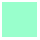

虽然你的程序能攻克 笑脸之一 和 笑脸之二 ，但是无法攻克 笑脸之三 。
试一试！
在前面提到的三个关卡里试试你的程序。
Note
at_goal():  

除了能知道自己所在的位置有没有笑脸以外，乐跑还能判断自己是否已经到达了指定地点——我们之前解释为乐跑的家。在更多的世界里，把这个地点理解为乐跑需要到达的目标位置（goal），可能比乐跑的家（home）更合适。at_goal() 是用来进行这项判断的函数，使用下面的解决方案应该可以攻克上面提到的全部四个关卡。
def move_until_done():
if at_goal():
# 做一些事
move()
if object_here():
# 做一些事
# 又做一些事
# 再做一些事
repeat 42:
move_until_done()
Note
如果在 笑脸之三 查看 世界信息 ，你会发现推荐的解决方案使用了我们还没有学的 Python 关键字—— while 。
完成上面的程序大纲，并确保能攻克全部三个关卡。
你已经完成了上面的练习，对不对？……很好。
这样做！
选择 回家之一 或 回家之二 。思考一下，你刚才给 笑脸 关卡写的程序在这儿能用么？当你想好了，就运行一下来证实你的想法。
观察一下关卡 跨栏之一 和 跨栏之二 。先忽略终点，如果我们适当的定义一个名为 jump_over_hurdle() 的函数，那么让乐跑沿着跑道跨栏的程序可以交替使用两个指令：
如果在某个地方加入一个测试条件（ if 语句）来判断乐跑是否已经到达终点，你就可以用上面的两个指令创建一个名为 move_and_jump_until_done() 的新函数。最终，你就能用一个程序攻克 跨栏之一 和 跨栏之二 ：
repeat 42:
move_and_jump_until_done()
这样做！
写这样一个程序并确保其能攻克 跨栏之一 和 跨栏之二 。
Hint
你的程序可以像下面这样：
from library import turn_right def move_and_jump_until_done(): # 做一些事 repeat 42: move_and_jump_until_done() if at_goal(): done()
不经任何改动，此程序能攻克 跨栏之三 么？